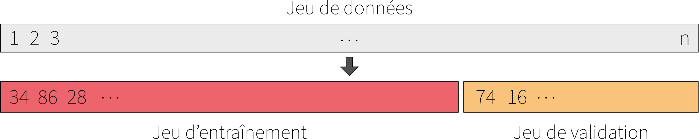
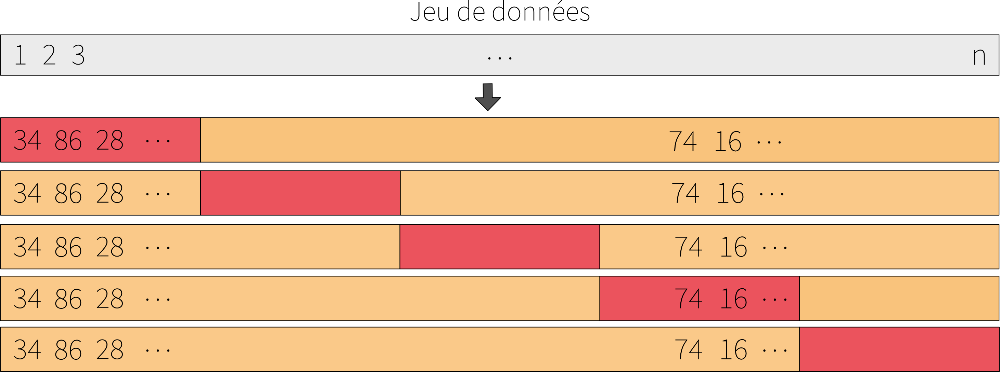

This section is based on James et al. (2021), Chapter 5.
Evaluating the Performance of a Predictive Model
In the previous section, we introduced tools for measuring the quality of an estimator: the mean square error (MSE) for quantitative variables and the error rate (ER) for qualitative variables. These measures compare the predicted values \(\widehat{Y} = \widehat{f}(X)\) to the observed values \(Y\). However, if we calculate these errors only from the data used to train the model, we risk underestimating the true prediction error. Why? Because the estimator \(\widehat{f}\) was adjusted to minimize the error on these same data. It therefore fits them well, and generally, too well! This can lead to the illusion that our model is performing well. Indeed, a very flexible model can have a low error on the training data simply because it captures noise rather than signal. But if the model adapts too much to the training data, it risks generalizing poorly to new data, i.e., data it has never seen before. This phenomenon is called overfitting.
TipNote: Overfitting and Underfitting
An overly flexible model can fit the training data perfectly, including random noise. It will have a low error on this data but a high error on new observations. This is called overfitting of the model. Conversely, a model that is too rigid (e.g., a constant straight line) will not be able to capture the structure of the data, even on the training set. This is called underfitting of the model.
The goal is to find the right balance between flexibility and generalization capacity.
To objectively evaluate a model, ideally, it would be best to test it on data completely independent of the data used for training. We therefore distinguish two sets: a training set, used to adjust the model, and a test set, used to evaluate the model’s predictive performance. In practice, we generally don’t have access to a test set to perform this evaluation. In this section, we will discuss two approaches to circumvent this problem.
Validation Dataset
When we only have a single dataset, a simple solution is to randomly divide it into two subsets: a training set to adjust the model, and a validation set to estimate the prediction error. This is called a validation set approach. Figure 1 presents a schematic of this approach, and ?@fig-trainval-1-pdf and ?@fig-trainval-2-pdf present an example of a training and validation set, along with the associated MSE. Figure 2 presents several combinations of training and validation datasets, along with the associated MSE.

Figure 1: Diagram of the validation set approach.
Code
# Load packageslibrary(tidyverse)library(dplyr)# Set seed for reproducibilityset.seed(42)# Function definitionf <-function(x) {4* x * (1- x) *log(x) +2}generate_splits <-function(data, train_prop =0.7, K =10) { rows <-list()for (k in1:K) { idx_train <-sample(nrow(data), size =floor(train_prop *nrow(data))) train <- data[idx_train, ] validation <- data[-idx_train, ] train_tbl <-tibble(split = k,set ="train",x = train$x,y = train$y ) validation_tbl <-tibble(split = k,set ="validation",x = validation$x,y = validation$y ) rows[[k]] <-bind_rows(train_tbl, validation_tbl) }bind_rows(rows)}# Generate N data points in the interval (0, 1]N <-200spans <-seq(0.1, 1, by =0.05) # LOESS smoothing parametersx_all <-runif(N, min =0.01, max =1) # avoid 0 due to log(x)y_all <-f(x_all) +rnorm(N, mean =0, sd =0.1) # add Gaussian noise# Put everything in a data.framedata <-data.frame(x = x_all, y = y_all)# Generate 10 training/validation splitssplits <-generate_splits(data, train_prop =0.7, K =10)write.csv(splits, './splits.csv')# Fit a model with different smoothing parameters on each splitsplits_number <-unique(splits$split)results <-list()for (n_split in splits_number) { df_split <- splits |> dplyr::filter(split == n_split) train <- df_split |> dplyr::filter(set =='train') |> dplyr::select(x, y) validation <- df_split |> dplyr::filter(set =='validation') |> dplyr::select(x, y) results_splits <-list()for (s in spans) {# Fit loess model with span = s on train and predict on validation model <-loess(y ~ x, data = train, span = s, degree =2) pred <-predict(model, newdata = validation$x)# For each point in x_grid, compute bias², variance, MSE bias2 <-mean((pred - validation$y)^2, na.rm =TRUE) var_pred <-var(pred, na.rm =TRUE) mse <- bias2 + var_pred results_splits[[as.character(s)]] <-data.frame(split = n_split,span = s,MSE = mse ) } results_splits_df <-bind_rows(results_splits) results[[as.character(n_split)]] <- results_splits_df}results <- results |>bind_rows()write.csv(results, './splits_mse.csv')
Code
data =FileAttachment("../../include/data/model-evaluation/splits.csv").csv({ typed:true })data_mse =FileAttachment("../../include/data/model-evaluation/splits_mse.csv").csv({ typed:true })viewof split = Inputs.range( [1,10], {value:1,step:1,label:"Autre jeu de validation"})filtered = data.filter(function(df) {return df.split== split;})current_mse = data_mse.filter(function(df) {return df.split== split;})
Figure 2: Illustration de l’approche par jeu de données de validation.
TipHow to choose the size of the subsets?
In general:
If we have a large number of observations (say, several thousand), we can do a 50-50 split.
If we have fewer observations, we would prefer to keep more observations for training. We can, for example, do a 70-30 or 80-20 split.
However, there is no universal rule. The right choice depends on the context, the complexity of the model, and the amount of data available.
However, this method has two drawbacks. The first is that the error estimate is unstable. Indeed, the value of the prediction error depends on the observations in the validation set. A different validation set may give a different result. The second is that there is less data to fit the model. Since part of the data is reserved for validation, the model is trained on a smaller set, and this may therefore overestimate its true error compared to if it had been trained on the full dataset.
Cross-validation
To overcome the limitations of the previous approach, cross-validation is often used. This method is more robust and stable. The principle is to repeat the validation set approach several times on different subsets of the dataset.
The approach consists of randomly dividing the set of observations into K subsets of equal size (called folds). The first fold is used as the validation dataset and the model is fitted on the remaining K - 1 folds. The prediction error is calculated on the first fold. This procedure is repeated K times; each time, a different fold is used as the validation dataset. At the end, we have \(K\) values for the prediction error. Finally, we calculate the average of the \(K\) prediction values. Figure 3 presents a diagram of this approach.

Figure 3: Diagram of the cross-validation approach
TipHow to choose the number of subsets \(K\)?
The choice of the number of subsets \(K\) has an impact on the quality of the prediction error estimation, as well as on the computational cost of the procedure. In practice, \(K = 5\) or \(K = 10\) are often used. This choice is based on a compromise between the accuracy of the error estimation and the required computational time. Indeed, for each value of \(K\), the model is fitted \(K\) times. Therefore, the larger \(K\) is, the greater the computational cost.
In the limiting case where \(K = n\), i.e. \(K\) is equal to the number of observations in the dataset, this is called leave-one-out cross-validation (LOOCV). In this case, each observation is used as validation once, and the model is trained on the other \(n - 1\) observations.
This choice of \(K = n\) minimizes bias in the prediction error estimate, because at each iteration, the model is fitted to almost all the observations in the dataset. However, this comes at the cost of high variance. Indeed, since the training sets are almost identical, the prediction errors are highly correlated, making the overall error estimate unstable.
Conversely, lower values of \(K\) introduce a slight bias in the error estimate (because the models are fitted to sets containing fewer observations), but reduce the variance of this estimate. This bias/variance tradeoff, coupled with a significant reduction in computation time, explains why \(K = 5\) or \(K = 10\) are standard choices in practice.
Finally, cross-validation is a general method that can be applied to most models.
References
James, Gareth, Daniela Witten, Trevor Hastie, and Robert Tibshirani. 2021. An Introduction to Statistical Learning: With Applications in R. Springer Texts in Statistics. New York, NY: Springer US. https://doi.org/10.1007/978-1-0716-1418-1.